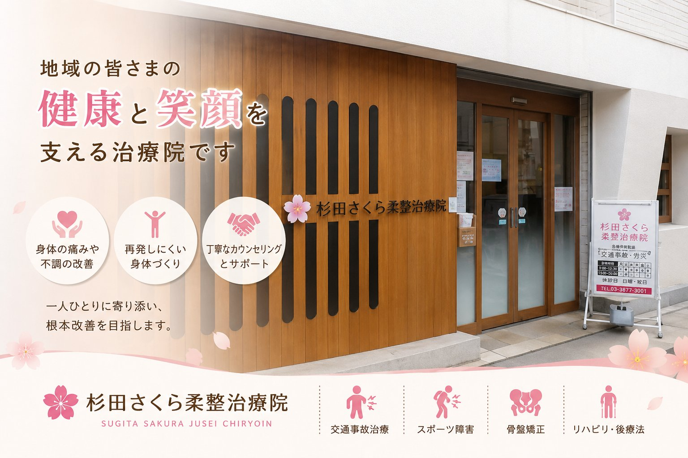
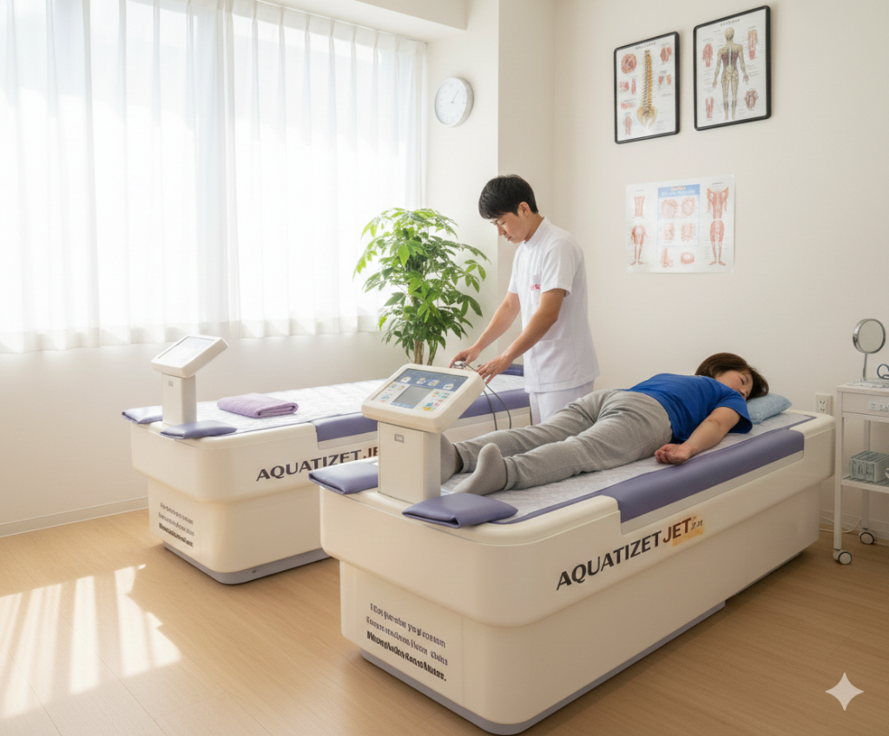
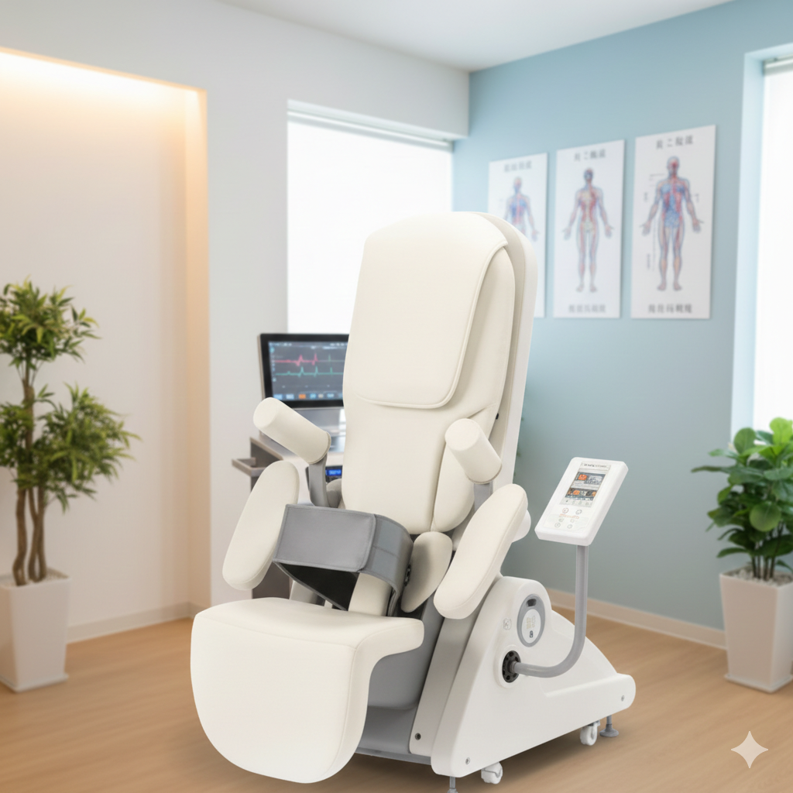
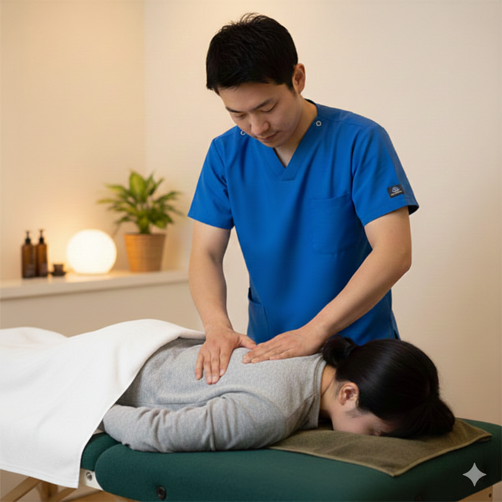
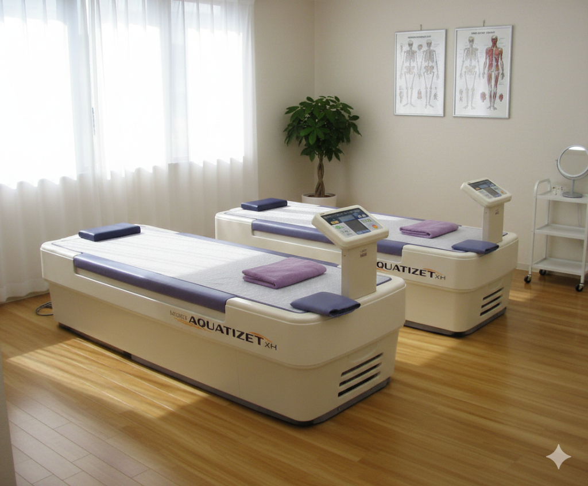
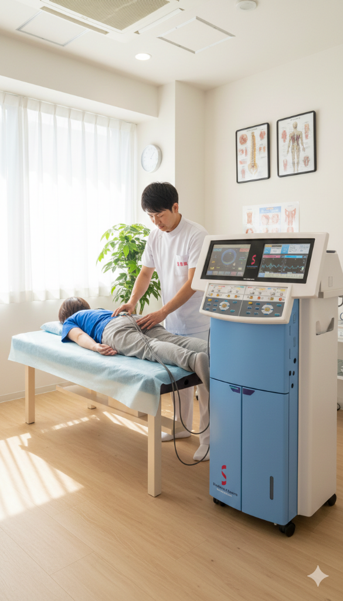
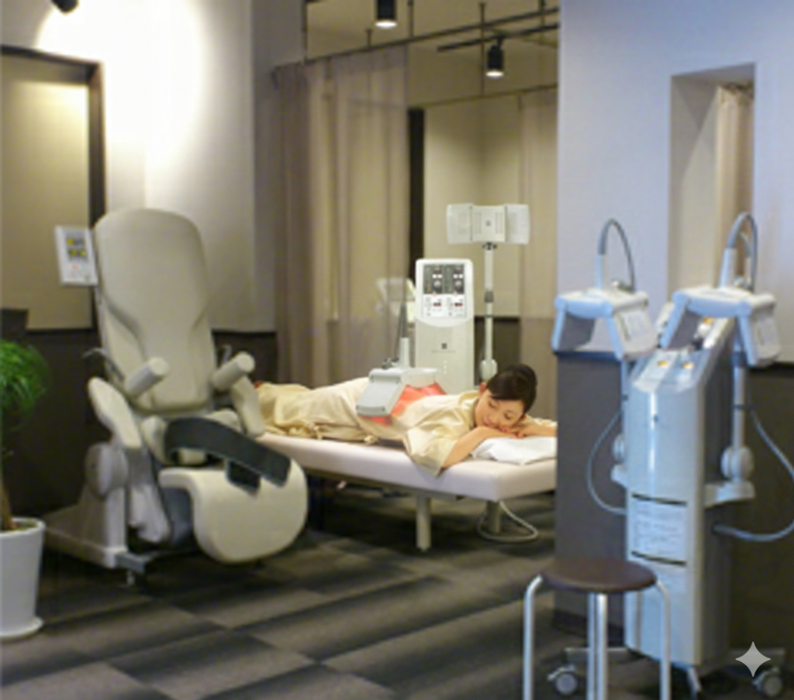
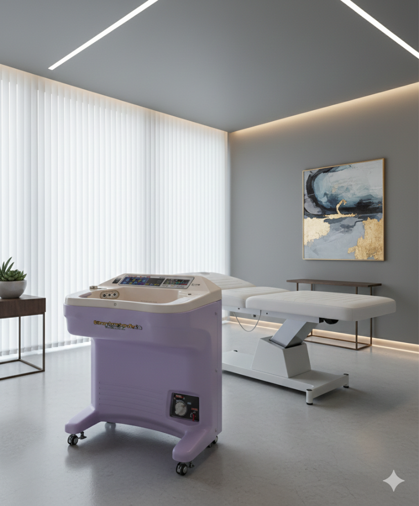

外傷のケア
骨折・脱臼・捻挫・打撲など、急性のケガに対して健康保険を使用した施術を行います。
保険適用
ご予約・お問い合わせはお電話にて
柔道整復師・鍼灸師の国家資格を持つスタッフが丁寧に対応いたします
自賠責保険適用で自己負担0円。むちうちなどの症状もお任せください
お仕事帰りでも通いやすい。平日は夜まで受付しております
健康保険・労災保険・自賠責保険など各種保険を取り扱っています
お体のお悩みに合わせて、最適な施術をご提案いたします
骨折・脱臼・捻挫・打撲など、急性のケガに対して健康保険を使用した施術を行います。
保険適用
むちうち・腰痛・手足のしびれなど、交通事故後の症状に対応。自賠責保険適用で自己負担0円。
自己負担0円
肩こり・腰痛・神経痛・冷え性など、慢性的な症状を根本から改善します。
鍼灸師在籍
骨盤の歪みを整え、姿勢を改善。産後の骨盤矯正にも対応しております。
女性に人気
捻挫・肉離れ・テニス肘・ランナー膝など、スポーツによるケガの治療・リハビリを行います。
早期復帰サポート
最新機器を用いた物理療法と手技療法を組み合わせ、日常生活への復帰をサポートします。
再発防止最新の設備と清潔な院内環境で、安心して施術をお受けいただけます







ご予約・お問い合わせはお電話にて承ります